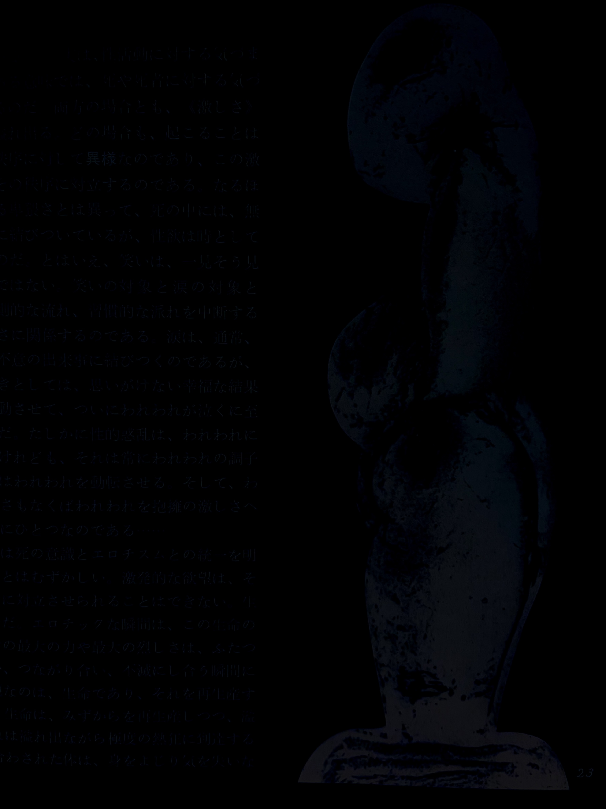

Baptisma
名古屋・東海地区で活動する先鋭的なアーティストたちの表現の拠点として知られる、ギャラリーDUCT / spazio ritaの支配人。

a****lmania as Lonepsychopath Exhibition
Opening GIG
at DUCT/spazio rita
Open 17:00 / Charge ¥2,000 (inc:1drink)
almania +
Baptisma
NOISECONCRETE
でかい船
Apocaliptic Autism
Steal
やかん飛行
and more...
名古屋・東海地区で活動する先鋭的なアーティストたちの表現の拠点として知られる、ギャラリーDUCT / spazio ritaの支配人。
Junji Ono a.k.a NOISECONCRETEとしての作品のほかに、コラボレーション作品も多数。
名古屋を拠点とするteh-0と大阪在住のdogatsukumunouによる洪水型オーバードーズ電子音ユニット。
いくつかの側面における不感症、不能を自覚しており、機能不全をすらより以上のものに昇華させるARTのポテンシャルを模索している、もしくはそのふりをしている。
類稀な色彩感覚と独自の言語を持った名古屋のミュータント。